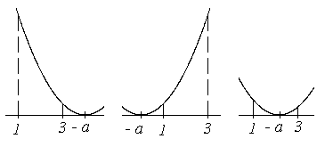

П19.1 №20
Для каждого значения параметра  найдите наименьшее значение функции на отрезке .
найдите наименьшее значение функции на отрезке .
найдите наименьшее значение функции на отрезке .РЕШЕНИЕ:
, точка является точкой локального минимума
функции. Наименьшее значение функции достигается в этой точке, если значение принадлежит интервалу , и реализуется случай

 если , то если
, то
если , то если
, то